Aerospace:
I would like to learn to fly small planes,
Aerospace:
I would like to learn to fly small planes,
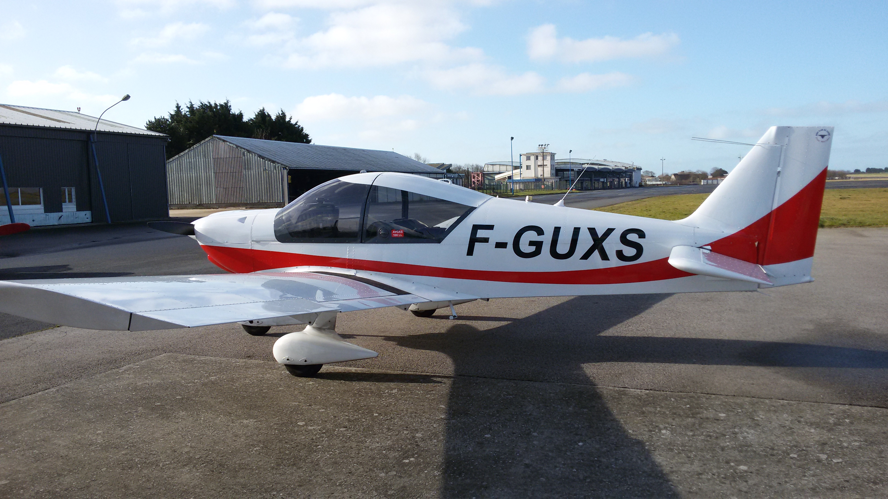
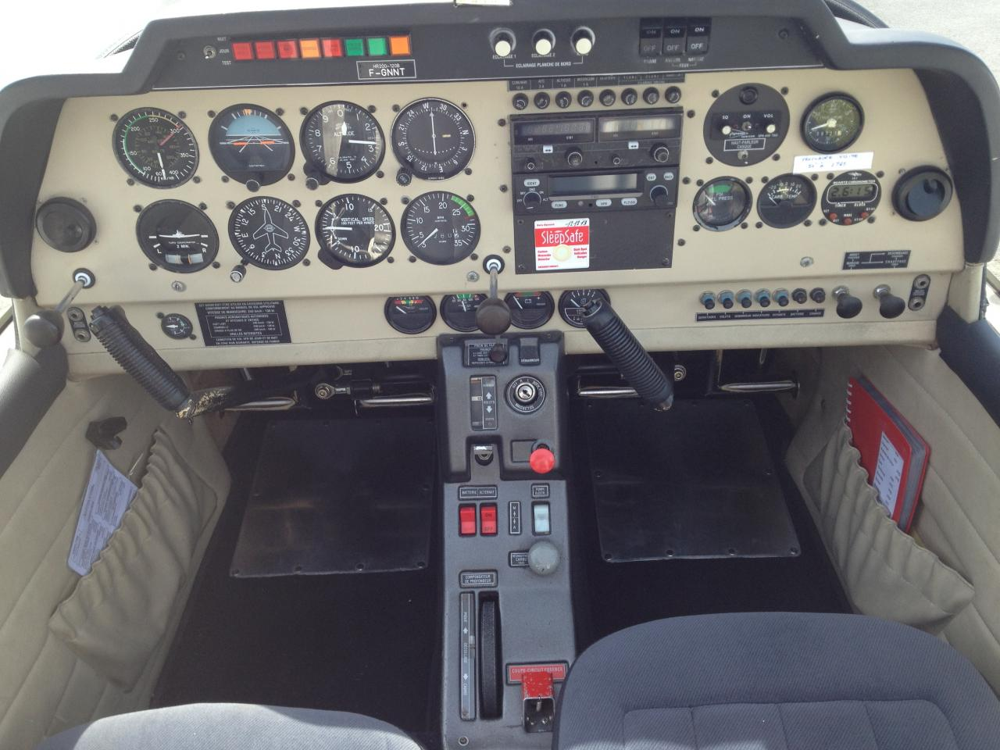
Aerospace:
I would like to learn to fly small planes,
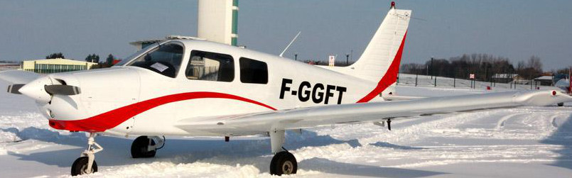
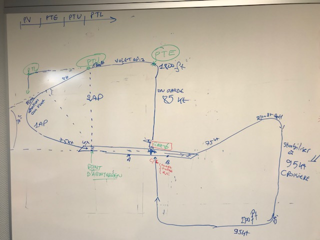
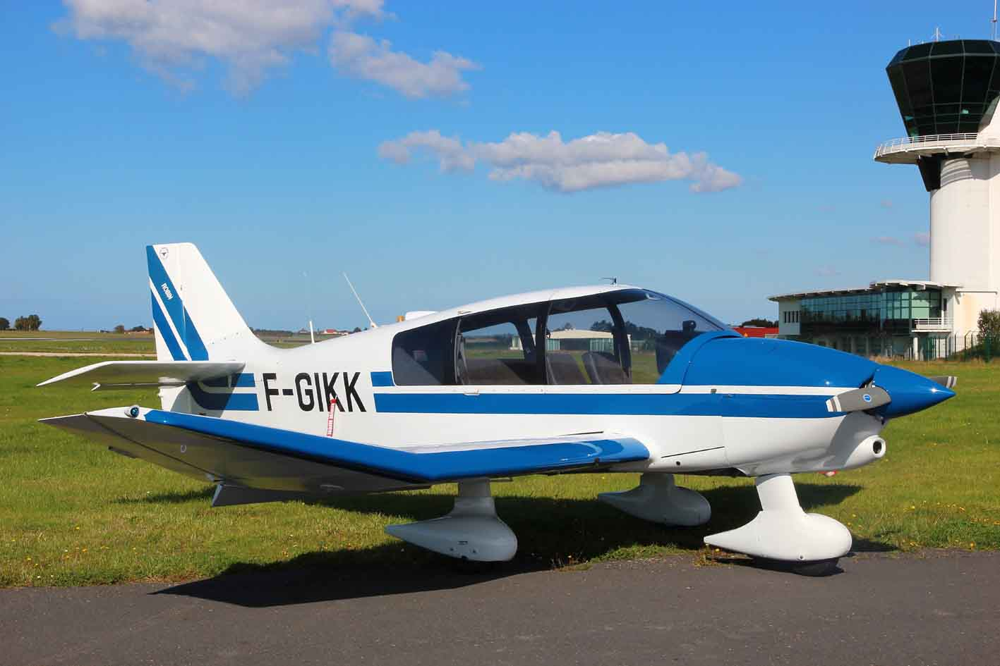
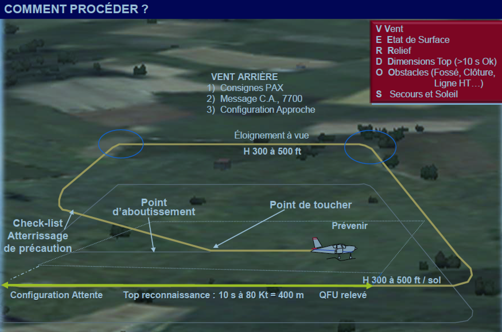
((graphique pris du guide de l'instructeur, ENAC))- Utiliser les repères naturels pour ne pas perdre le terrain de vue, ne pas trop s'écarter de la bande choisie,
- Après avoir assuré la phase de reconnaissance, organiser le circuit adapté et effectuer la check-list atterrissage forcé avec moteur
- Préparer les passagers
- Déterminer un point d'aboutissement de la trajectoire en fonction de la zone de toucher des roues prévue. L'approche finale s'effectue à 1.3 Vs0. Ne pas hésiter à effectuer une approche interrompue suivi d'un autre circuit, si la stabilisation et la précision de la finale ne sont pas suffisantes
- Le contact des roues doit se faire à la vitesse minimum, puis maintenir l'avion cabré ou freiner énergiquement en fonction de l'état du sol.
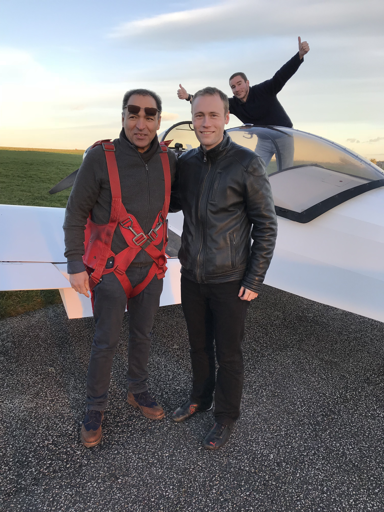
- - -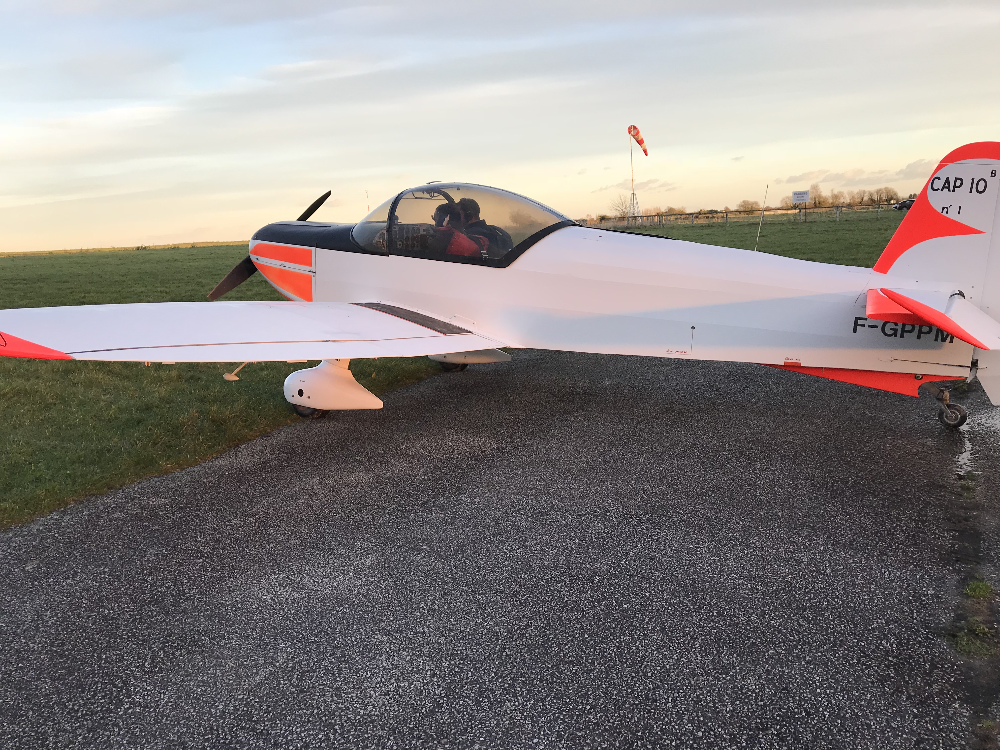
- - -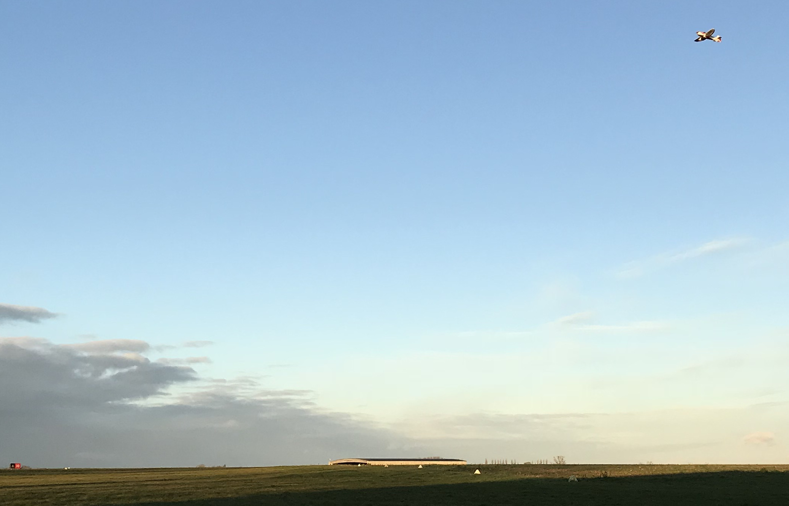
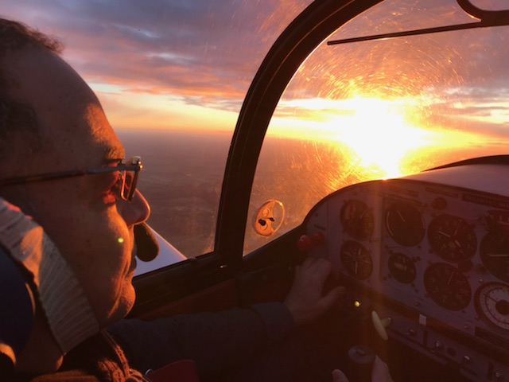
- - -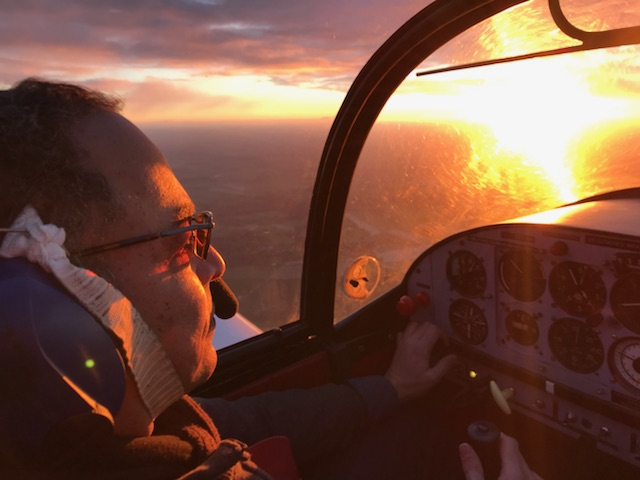
- - -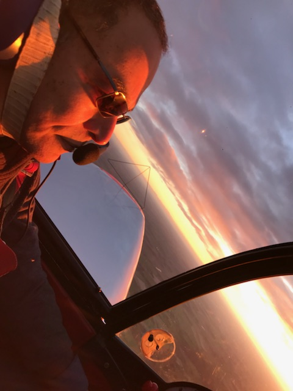
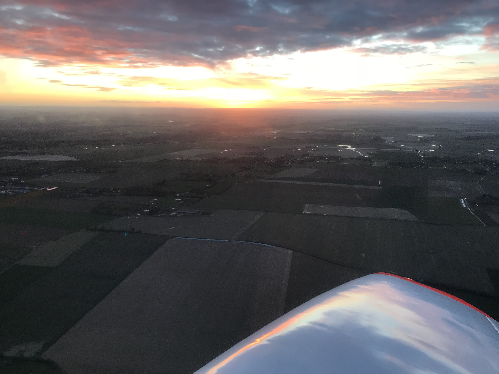
- - -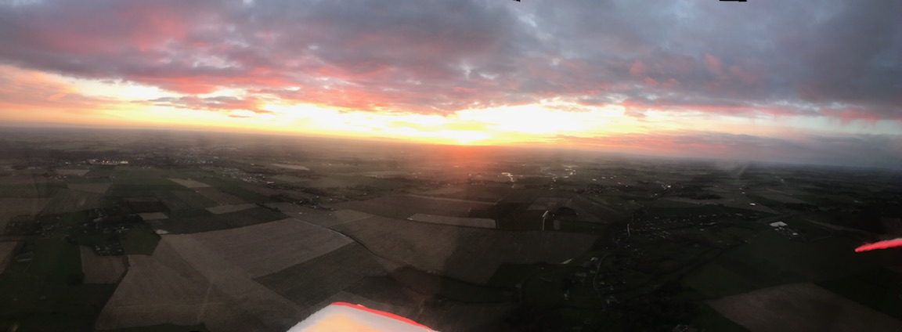
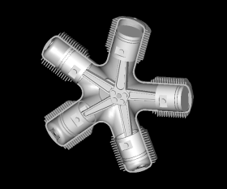
(Un moteur en étoile, ou plus exactement à cylindres en étoile, est un type de moteur à pistons dont les cylindres sont placés sur un même plan autour du vilebrequin et axe de sortie moteur. Source : https://fr.wikipedia.org/wiki/Moteur_en_%C3%A9toile)
See also:
FFA:
Fédération Francaise Aéronautique (French federation Aerospace)
See
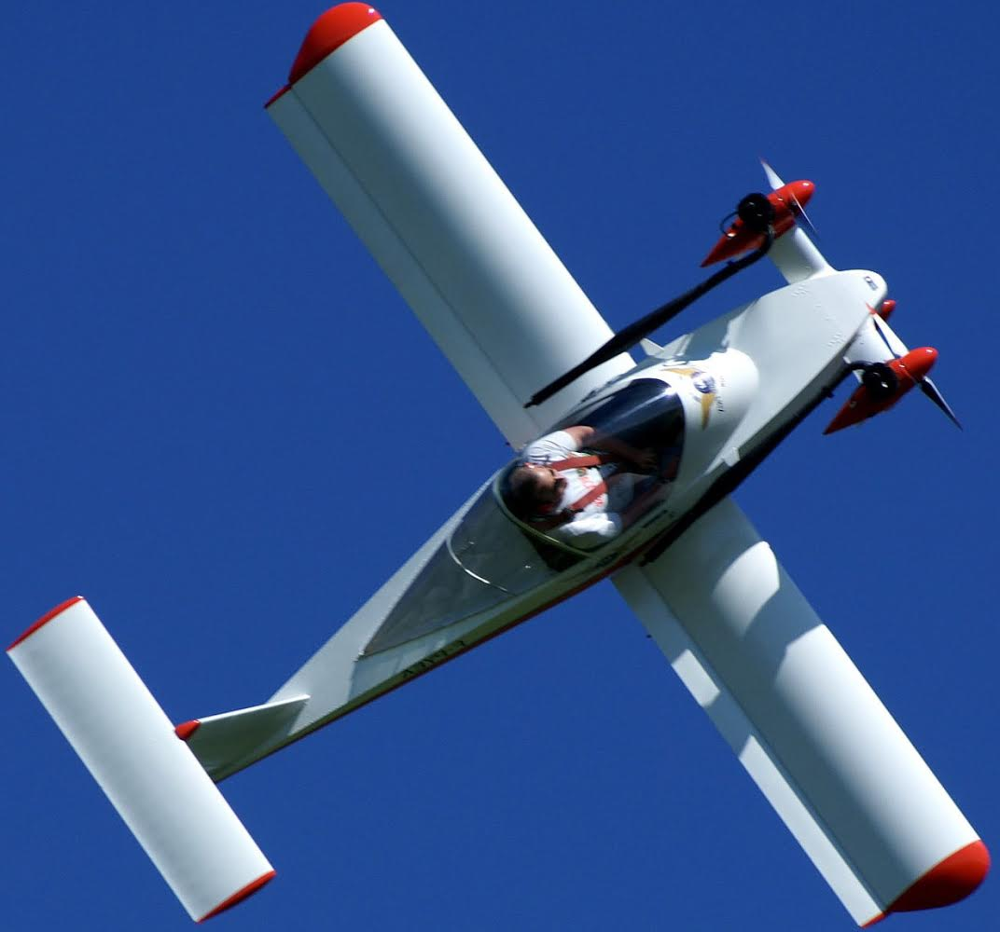
Pierre Collet : One of my friends, pilot and outfielder among other things, inside his "CRI CRI". Photo taken from the ground while flying sideways during an airshow !